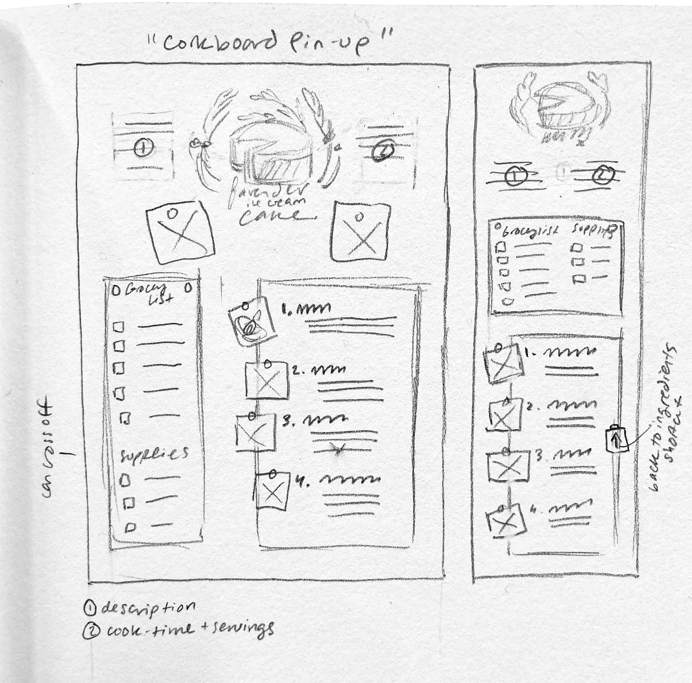
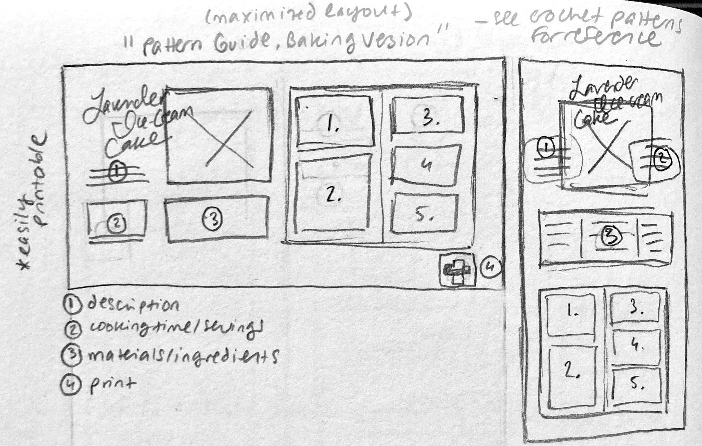
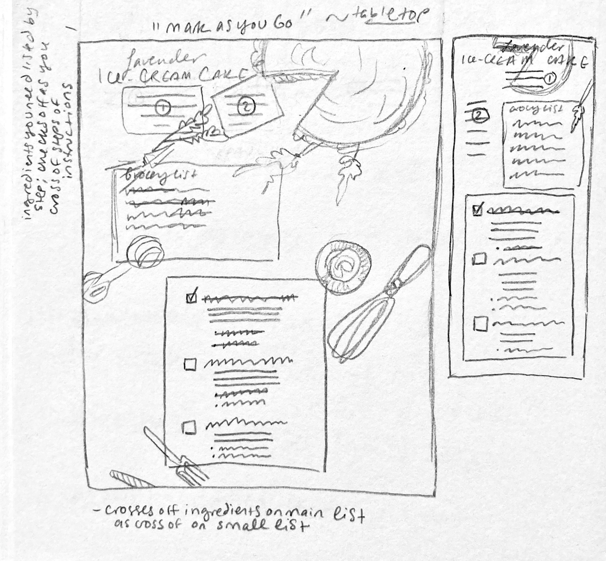

"Corkboard Pin-up"
- pinned paper/images aesthetic
- "grocery list" where check off ingredients as you go
- hand-drawn images accompanying each step
"Baking 'Pattern Guide'"
- maximize amount of information on screen to avoid scrolling back and forth
- inspired by crochet patterns
- printable horizontal layout
"Mark As You Go"
- table-top aesthetic
- keep track of ingredients - full ingredients list at the top, relevant ingredients listed beneath each step
- highly interactive - keep track of what you've used by "crossing off" relevant ingredients, which also crosses off on full ingredient list